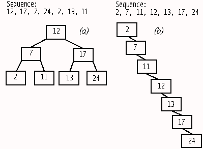
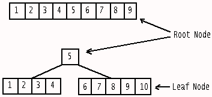
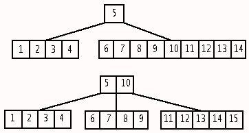
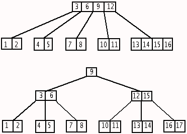
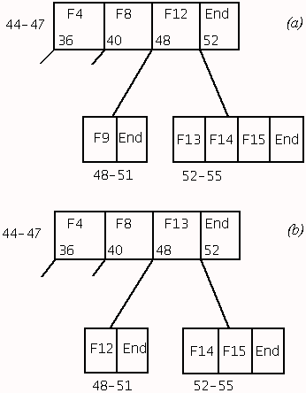

The most basic structures in the HPFS are DIRBLKs, DIRENTs and FNODEs. This month we examine DIRBLKs and DIRENTs, learn about the differences between binary trees and B-trees and see how DIRBLKs are interconnected to facilitate quick access in a large directory (one of HPFS' strengths). To assist in this investigation, this month's program, ShowBtree.cmd, will help you to visualise the layout of directory and file entries in a partition.
An ordered tree is a more efficient method of storing a large number of records. Some terminology. All trees have nodes. Nodes have keys (elements). Nodes can have 1 or more links (pointers) to other nodes and different tree structures have different arrangement of links. The source of the link is the parent node and the destination is the child node. Assuming every key in an intermediate node has a child link, there can be one more link from a parent node to a child than the number of keys in the parent. Say a node has space for a maximum of 8 keys and currently holds 5 keys (entries). This node can currently have up to 6 links to its children. The maximum number of descendent links in a node is also known as a tree's order. In this example the tree has an order of 9. At the top of the tree is the root node. (Computer trees are arranged upside-down compared to trees in nature.) At the bottom of the tree are leaf nodes which have no descendent links. Leaf nodes contain a special sentinel value in their pointers to indicate the end of this particular branch.
The simplest type of tree structure is a binary tree. Each node contains a single key and up to two links. The links go to child nodes that contain keys that are less than or greater than the key in their parent. Figure 1a shows a perfectly balanced binary tree while Figure 1b shows a degenerate structure. A binary tree is perfectly balanced when the maximum length from the root to any leaf node is the same. The number of levels in 1a is 3, and the order is 2 because it has a maximum of two descendent links. The maximum number of records a binary tree can hold is (2^levels) - 1 and the maximum number of levels required is Log2(N+1) rounded up. In our perfect example we have a maximum number of records of (2^3) - 1 = 7, and 7 records require Log2(7+1) = 3 levels.

Figure 1: Examples of perfectly balanced (a) and degenerate (b) binary trees.
Searching for an entry in the perfectly balanced tree requires a maximum of 3 node checks (the same as the number of levels). The required entry may be located in an intermediate node or the root node so sometimes the search will end more quickly.
The degenerate tree in Figure 1b is no better than a linked linear list. The difference becomes more apparent when you have many entries. For example, say you have 1,023 keys. The maximum search length for a balanced binary tree would be Log2(1023+1) = 10 whereas the maximum for a degenerate tree would be 1,023 with an average of about 512.
As you add records to a binary tree it grows downwards with subsequent entries going to the left or the right based on whether or not they are then are less than or greater than the record in the current node. By convention, greater than values go to the right. In effect the entries are sorted due to the way the search is performed for a suitable node for their storage.
The first record in a sequence plays a crucial role because it ends up as the key in the root node. If it is a bad choice then a lopsided tree will develop. The optimum choice for the initial record is the median value for the sequence. In a series of 7 values the median value has 3 values less than it and 3 values greater than it. The basic binary tree is unsuitable for use in a file system where there is no prior knowledge of a suitable median value.
We'll deal with an increasing number series. Figure 2 shows a B-tree with an order of 10 (maximum of 10 descendent links and 9 keys per node) just before and just after budding. Note how the median value in the sequence is promoted to become the sole entry in the root node. Figure 3 shows how adding more records will eventually cause another promotion to the root.

Figure 2: Adding another record to a B-tree node which is already full produces promotion and node splitting. This B-tree has an order of 10 (max. 9 keys per node).

Figure 3: Adding more records eventually produces further promotion and node splitting.
Before we get down to rules I want to present an example with 3 levels. Figure 4 shows the level 2 -> level 3 transition in a order-of-5 structure.

Figure 4: The transition in an order-of-5 B-tree from a 2-level to a 3-level structure.
Here are the rules that a B-tree structure obeys:
You can see from Figure 2 and 3 and Rule 3 that a B-tree combines sequential lists linked in a multi-descendent tree structure. This means that, while it only takes a few disk reads to get to the node containing the required value, the node itself must be searched in a sequential fashion. However, the whole of a node will typically be read into memory in one gulp so the actual node search doesn't take long either. Also the sorted ordering of Rule 3 ensures that it is a straightforward matter to determine whether or not an entry exists.
The first DIRENT in any directory, including the root directory, is a ".." entry. The last entry in any DIRBLK is an end marker record. The number of entries in the first DIRBLK in a directory (not counting the ".." and the end marker records) compared to name size is:
Name Length Max. DIRENTs
2-5 54
6-9 49
10-13 44
14-17 40
The order for a DIRBLK will be one more than the maximum number of
DIRENTs (keys). Other DIRBLKs for a directory may have an order of one
more again due to not having a ".." entry.
Figure 5 shows the layout of a DIRBLK and its DIRENTs. We will use ShowBtree.cmd (to be described later) to investigate the arrangement of DIRENTs and DIRBLKs. We will also need a method of creating multiple test files. The method presented here assumes the files will be put in an empty partition, otherwise you have to find them first. If you have the flexibility make the partition 1 MB (the smallest possible HPFS volume) to speed things up. If you have a larger empty partition then this will also be suitable and I suggest you use default reformating. With WARP, the default will be "quick" reformating (described in Part 1). I prefer to use the complete reformat method ("/L") which means that you can take a binary look at the disk without seeing artifacts from its previous incarnation. This take longer unless you have a very small partition. (Due to the small partition size the whole operation was only taking about 4 secs.) In this test situation it's not going to matter if the artifacts exist. Note: the disposition of HPFS structures changes if you have a very small partition with the directory band, which is normally near the centre, being placed near the beginning.
Offset Data Size Comment
hex (dec) bytes
Header
00h (1) Signature 4 0x77E40AAE
04h (5) Off. 1st Free 4 Offset within DIRBLK to 1st free entry.
08h (9) Change 4 Low bit indicates whether this is
topmost DIRBLK in B-tree.
0Ch (13) Parent LSN 4 If topmost, LSN of this dir's FNODE.
Otherwise, LSN of parent DIRBLK.
10h (17) DIRBLK's LSN 4 Self-pointer.
DIRENT #0
14h (21) Entry's Size 2 Always a multiple of 4.
16h (23) Flags 1 0x01 (0) Special ".." entry
0x02 (1) Has an ACL
0x04 (2) Has a B-tree down-pointer
0x08 (3) Entry is a dummy end record
0x10 (4) Has an EA list
0x20 (5) Has an extended permission list
0x40 (6) Has an explicit ACL
0x80 (7) Has "needed" EAs
17h (24) Attributes 1 0x01 (0) Read-Only
0x02 (1) Hidden
0x04 (2) System
0x08 (3) Not used. Would be Vol attr.
0x10 (4) Directory
0x20 (5) Archive
0x40 (6) Long Name (bigger than 8.3)
0x80 (7) Reserved
18h (25) FNODE LSN 4 FNODE of this entry.
1Ch (29) Time Last Mod. 4 Secs since 00:00 1-1-70
20h (33) File Size 4
24h (37) Time Last Access 4 Secs since 00:00 1-1-70
28h (41) Time When Created 4 Secs since 00:00 1-1-70
2Ch (45) EA Size 4 Size of internal or external EAs.
30h (49) Flex 1 3 LSBits: # ACLs. 5 MSBits: reserved
31h (50) Code Page Index 1 7 LSBits: CP index. MSBit: DCBS present
32h (51) Name Size 1 Length of following name
33h (52) Name n Variable length: 0-254
33h+n ACL ? Access Control List info, if present.
Padding 0-3 bytes to reestablish dword align.
x Down Ptr LSN 4 If present, down ptr to next B-tree node
DIRENT #1
Start offset: DIRBLKHdrLen (20 bytes) + DIRENT #0 size
...
Last "END" DIRENT in DIRBLK contains information of limited validity
Entry's Size 2 32 (dec) or 36 if it has a Down Ptr.
Flags 1 Bit 3 (counting from 0) set.
...
Don't trust any reported FNODE LSN. End marker doesn't have one.
Down Ptr LSN 4 If present.
Note 1: Decimal offset is shown with 1-based numbering to suit REXX work.
Note 2: x = DIRBLKHdrLen + DIRENT size - 4. Always computed from DIRENT end.
Figure 5: Layout of a HPFS DIRBLK and its DIRENTs. DIRBLKs are 2K in size and the
maximum number of DIRENTs they can contain varies due to the variable length of a
DIRENT's name field (0-254 bytes).
Figure 6 show the test program, TEST.CMD. You would issue "TEST 10" if you want to produce 10 sequential zero-length file DIRENTs in the N:\directoryname1 directory. The filenames are all 241 characters long. When you add on the 18 characters of "N:\directoryname1\" you arrive at the 259 character full pathname limit. I've used very long filenames to reduce the number of DIRENTs that will fit in a DIRBLK to a minimum so that structure listings are more compact.
/* Wipes a test partition (here N:), creates 3 directories &
places the requested number of files with very long names
in one of the directories. THIS PROGRAM WILL AUTOMATICALLY
REFORMAT THE TEST PARTION SO BE SURE THAT'S WHAT YOU WANT.
*/
ARG numOfFiles .
'@echo off'
'setlocal' /* Preserve orig drv & dir. Exiting returns there */
'echo y | format n: /l /fs:hpfs' /* Requires no keystrokes */
'md n:\directoryname1'
'md n:\directoryname3'
'md n:\directoryname2' /*"Out of sequence" directory creation*/
'n:'
'cd\directoryname1'
DO x = 1 TO numOfFiles
CALL Stream Pad(x), 'c', 'open' /* Create file */
CALL Stream Pad(x), 'c', 'close'
END
/* Deduce the B-tree layout with ShowBtree.cmd and send its
output to a LIST-type program running in STDIN mode */
'd:\hpfs4\showbtree n: | list /s'
EXIT /***********************************************/
Pad: /* Generate a very long constant-length filename */
RETURN Copies('a',228)||'Testfile'||Right('0000'||x,5)
Figure 6: TEST.CMD produces a sequential file sequence. Ensure that you
have a comment starting in row 1, col 1.
Figure 7 shows the result of "TEST 7". Each section, separated by a space, is a DIRBLK with its start-end LSNs listed. First look at the letters down the left. "S" indicates a special ".." entry; "E" is a dummy end record; "D" is a directory. The first two of these come from the Flags byte while the third one is determined from the Attributes byte.
Root Directory:
1016-1019 Next Byte Free: 233 Topmost DirBlk
This directory's FNODE: 1032 (\ [level 1]) 1016->1032
**************************************************
SD 21 #00: .. FNODE:1032
D 57 #01: directoryname1 FNODE:1033
D 105 #02: directoryname2 FNODE:1035
D 153 #03: directoryname3 FNODE:1034
E 201 #04:
36-39 Next Byte Free: 1993 Topmost DirBlk
This directory's FNODE: 1033 (directoryname1 [level 1]) 36->1033
**************************************************
SD 21 #00: .. FNODE:1033
57 #01: aaTestfile00001 FNODE:316
329 #02: aaTestfile00002 FNODE:317
601 #03: aaTestfile00003 FNODE:318
873 #04: aaTestfile00004 FNODE:319
1145 #05: aaTestfile00005 FNODE:320
1417 #06: aaTestfile00006 FNODE:321
1689 #07: aaTestfile00007 FNODE:322
E 1961 #08:
68-71 Next Byte Free: 89 Topmost DirBlk
This directory's FNODE: 1034 (directoryname3 [level 1]) 68->1034
**************************************************
SD 21 #00: .. FNODE:1034
E 57 #01:
100-103 Next Byte Free: 89 Topmost DirBlk
This directory's FNODE: 1035 (directoryname2 [level 1])
100->1035
**************************************************
SD 21 #00: .. FNODE:1035
E 57 #01:
Figure 7: Output from the ShowBtree.cmd program. Test partition only had
3 subdirectories and 7 very long filename zero-length files in one of the
subdirectories.
The numbers to the right are the decimal offsets (counting from 1) to these DIRENTs. (One-based numbering assists you when you are tracing in REXX.) The "Next Byte Free" value at the top is also one-based. If you add 32 bytes to the starting offset of the dummy end record you will also arrive at this value.
The program is designed to truncate DIRENT names to the last 15 characters. Showing the additional 226 "a"s at the beginning of each of these entries would only clutter the display.
Look now at the directoryname entries and their associated FNODEs (every file and directory has an FNODE). Notice how the FNODE LSN order is 1033, 1035 and 1034 due to the order in which they were created but the DIRENTs in the Root Directory DIRBLK are sorted. This indicates that sorting is done by rearranging DIRENTs, not by moving either the files or their FNODEs on the disk.
There are multiple "level 1" entries in this display because the main B-tree currently contains three other B-tree structures arising from the presence of three subdirectories. The LSN pointer display on the far right shows the back pointer relationship between the DIRBLK and its parent FNODE. Notice how HPFS spaces the root DIRBLK of each B-tree (36-39, 68-71 and 100-103). This allows space for each B-tree to grow in complexity without its descendent DIRBLKs (nodes) being situated far apart.
Each of the mammoth test file DIRENTs requires 272 bytes so, looking at the DIRBLK starting at LSN 36 in Figure 7, we can see that another one won't fit it this DIRBLK. Figure 8 omits the directoryname DIRENT and DIRBLKs and concentrates on the changes that occur when we issue "TEST 8". (You may now wish to alter TEST.CMD so it won't create the last two directories but leave directoryname1 and create the files in it.)
36-39 Next Byte Free: 905
Parent DirBlk: 44 (directoryname1 [level 2]) 36->44->1033
**************************************************
SD 21 #00: .. FNODE:1033
57 #01: aaTestfile00001 FNODE:316
329 #02: aaTestfile00002 FNODE:317
601 #03: aaTestfile00003 FNODE:318
E 873 #04:
40-43 Next Byte Free: 1141
Parent DirBlk: 44 (directoryname1 [level 2]) 40->44->1033
**************************************************
21 #00: aaTestfile00005 FNODE:320
293 #01: aaTestfile00006 FNODE:321
565 #02: aaTestfile00007 FNODE:322
837 #03: aaTestfile00008 FNODE:323
E 1109 #04:
44-47 Next Byte Free: 333 Topmost DirBlk
This directory's FNODE: 1033 (directoryname1 [level 1]) 44->1033
**************************************************
P 21 #00: aaTestfile00004 FNODE:319 DownPtr:36
PE 297 #01: DownPtr:40
Figure 8: Promotion and node splitting occurs when we put 8 very long
filename entries in a directory. Note the down pointers in the DIRENTs
for File 4 and for the end marker in the topmost DIRBLK in directoryname1's
B-tree. (The other two directories are not shown.)
We now see the presence of down-pointer LSNs in the new root node (don't confuse this with the root directory - it's just the top of this particular B-tree). There is one root DIRENT so there has to be two descendent links (Rule 2). The dummy end marker's down-pointer is best considered as a "greater than" pointer, while all other down-pointers lead to "less than" values. Due to the large DIRENT size, it is not immediately obvious that a median value was promoted. To see this more clearly, temporarily comment out the current Pad() RETURN line in TEST.CMD and instead generate a 4-character file sequence with:
RETURN Right('000'||x,4)
Now issue "TEST 55" (the first budding point) and you will see that
the distribution is: 1-26 (+ ".."), 27, 28-55.
We'll now look at the transition from a 2-level to a 3-level structure. Figure 9a shows the structure with 35 very long filenames. Due to the sequential (non-random) nature of our file series all the action has been occurring on the far right node of level 2. Each time this node fills up, it splits, promotes the median up to the root node and moves the top half of the overfull node's DIRENTs into a new level 2 node which then becomes the new rightmost DIRBLK. Since no files lower in the sequence occur afterwards we end up with partially filled nodes. In practice, files in a directory will be added in a more random fashion and DIRBLK occupancy will be greater. This time, when another file is added, there will be no space in the root for another promoted median. So it's time for the root to split and send up a new root node. See Figure 9b.

Figure 9a: Simplified B-tree diagram for directoryname1. This B-tree currently holds 35 files. The "Next Byte Free" for the DIRBLK situated at LSN 72-75 is offset 1956. Each "F" entry is 272 bytes long. If another one is added to this DIRBLK, then promotion will occur. FNODEs are not shown here, but it should not be forgotten that a DIRBLK is not an abstract data structure, but a means of storing the FNODE locations of files.

Figure 9b: The change to a 3-level structure.
What about deletions? What causes demotions? Rule 6 states that any DIRBLK, except the root, must have at least order/2 - 1 DIRENTs. Since order is 8 in this example you will notice that no lower level node has less than three entries. Delete ...aTestfile00010. Thanks to CMD.EXE's more powerful wildcard capabilities compared to COMMAND.COM, you can issue:
DEL N:\DIRECTORYNAME1\*00010This level 3 node now contains two entries excluding the end marker. (It's not a proper DIRENT but rather a means of holding a "greater than" down-pointer.) You should check that no demotion has occurred yet. HPFS appears to break Rule 6 in the interests of reducing disk activity. Keep deleting files from this node and checking. After you delete the final file in this node HPFS will act because a leaf node can not be empty. Figure 10 shows what happens. File 12 is demoted from level 2 to become the sole occupant of the leaf. But this causes a problem: we need to have 4 descendent links from the level 2 node, but now only have 2 entries. So File 13 is promoted to fix this.

Figure 10: The deletion of files in the DIRBLK situated at LSN 48-51.
This is a subset of the structure shown in Figure 9b.
Figure 10a: At this stage F10 and F11 have been deleted.
Figure 10b: When the final leaf entry (F9) is deleted, some DIRENT
shuffling occurs.
This rule breaking is only possible in a leaf node because leaves have no descendents. To check this out we'll remove an entry from a level 2 directory. Re-establish the 36 file structure of Figure 9b and then delete File 8. You'll find that File 9 gets promoted from level 3 to plug the gap.
In a typically situation, on a empty partition of reasonable size (>= 15 MB), the root directory FNODE will be located either right before or right after the Directory Band. The root directory DIRBLK will be outside the Directory Band and situated next to its FNODE. The design presented here (see Figure 11) finds the root directory FNODE from the dword at offset 13 (decimal, counting from 1) in the SuperBlock. It then consults the physical LSN value (offset 73) in the sole extent entry in this FNODE. (FNODE layouts will be covered in Part 5.) This LSN points to the start of the topmost DIRBLK in this B-tree i.e. the start of the root directory DIRBLK. The ShowDirBlk procedure is then used to display the Btree-related information of this DIRBLK.
/* Shows B-tree structures. Note: only the Root DIRBLK and
DIRBLKs in the Main Directory Band are examined. */
'@cls'
SAY
ARG drive . /* Drive parameter missing */
IF drive = '' THEN CALL Help
IF WordPos(drive,'? /? /H HELP A: B:') \= 0 THEN CALL Help
CALL RxFuncAdd 'ReadSect','Sector','ReadSect'
CALL RxFuncAdd 'SysLoadFuncs', 'RexxUtil', 'SysLoadFuncs'
CALL SysLoadFuncs
/* Initialise Lookup Table for later bitwise ANDing */
DO exponent = 0 TO 7
bitValue.exponent = D2C(2**exponent)
END exponent
sectorString = ReadSect(drive, 16) /*SuperBlock is LSN 16*/
rootFnodeLSN = Bytes2Dec(13,4)
dirBandSecs = Bytes2Dec(49,4)
dirBandStart = Bytes2Dec(53,4)
dirBandEnd = Bytes2Dec(57,4)
dirBandBitmapLSN = Bytes2Dec(61,4)
numDirBlks = dirBandSecs%4 /*Each DirBlk comprises 4 secs*/
dirBlk = 0
element. = 0 /*Initialise contents of this compound var to 0*/
dirBlkHdrLen = 20
/* Read in the root FNODE */
sectorString = ReadSect(drive, rootFnodeLSN)
rootDirBlkStart = Bytes2Dec(73,4)
i = 1 /*The ShowDirBlk() func expects i to hold the count*/
element.0 = 1
element.i.dirBlkLSN = rootDirBlkStart
SAY 'Root Directory:'
CALL Charout 'STDOUT:',rootDirBlkStart"-"rootDirBlkStart+3" "
Call ShowDirBlk /* Present the contents of the root DIRBLK */
i = 0
element. = 0
bytes = numDirBlks%8 /*Byte maps usage of 8 DIRBLKs (32 secs)*/
IF numDirBlks//8 > 0 THEN bytes = bytes+1 /* Round up */
/* Read in Dir Band Bitmap */
sector = ReadSect(drive,dirBandBitmapLSN)
/* Reduce length to valid data */
dirBandBitmapBytes = Left(sector,bytes)
DO bitmapByte = 1 TO bytes /*Examine occupancy of Dir Band*/
char = Substr(dirBandBitmapBytes,bitmapByte,1)
DO bitPos = 0 TO 7
IF BitAnd(char, bitValue.bitPos) = '0'x THEN
DO /* DIRBLK is occupied */
tempLSN = dirBandStart + dirBlk*4
/* Root DIRBLK covered earlier */
IF tempLSN \= rootDirBlkStart THEN
DO
i = i + 1
element.0 = i /*Inc count of occupied DIRBLKs*/
element.i.dirBlkLSN=tempLSN/*Store DIRBLK start*/
END
END
/* Have we reached the Directory Band end? */
IF dirBlk+1 < numDirBlks THEN
dirBlk = dirBlk+1 /* Not yet */
ELSE
LEAVE bitmapByte /* Exit outer DO loop */
END bitPos
END bitmapByte
IF i = 0 THEN EXIT
/* Dir Band empty (all entries must have been in root DIRBLK) */
/* Process contents of the compound variable */
DO i = 1 TO element.0
span = element.i.dirBlkLSN'-'element.i.dirBlkLSN+3
CALL Charout 'STDOUT:',span' '
CALL ShowDirBlk /* Present the contents of a DIRBLK */
END i
EXIT /************************************************/
Bytes2Dec:
ARG startPos,numOfChars
RETURN C2D(Reverse(Substr(sectorString,startPos,numOfChars)))
Byte2Char:
ARG startPos
RETURN Substr(sectorString,startPos,1)
ShowDirBlk:
sectorString = ''
DO k = 0 TO 3 /* Read in the 4 secs of the DIRBLK */
sectorString = sectorString||ReadSect(drive,element.i.dirBlkLSN+k)
END k
/* Make the 0-based NextFreeByte 1-based
to match DIRENT offset numbering */
nextFreeByte = Bytes2Dec(5,4)+1
CALL Charout 'STDOUT:','Next Byte Free:' nextFreeByte' '
IF BitAnd(Byte2Char(9),bitValue.0) \= '0'x THEN
DO /*Bit0 of the Change byte indicates this block is topmost*/
SAY 'Topmost DirBlk'
CALL CharOut 'STDOUT:',"This directory's FNODE:"
END
ELSE
DO
SAY
CALL Charout 'STDOUT:', 'Parent DirBlk:'
END
CALL Charout 'STDOUT:',' 'Bytes2Dec(13,4)' '
level = 1
parent = ''
CALL Charout 'STDOUT:',' ('||FindTheRoot(Bytes2Dec(13,4))||') '
PARSE VALUE SysCurPos() WITH row . /* Get current cursor pos*/
CALL SysCurPos row,60 /* Set cursor to column 60 */
SAY parent /* parent was determined by FindTheRoot() */
SAY Copies("*",50)
filenameStr = ''
dirEntOffset = dirBlkHdrLen+1 /* Convert to 1-based */
dirEnt. = ''
DO n = 0 TO 999 /* This loop will be exited by LEAVE */
IF dirEntOffset=nextFreeByte THEN LEAVE /*Reached end*/
dirEntLen = Bytes2Dec(dirEntOffset,2)
nameLen = Bytes2Dec(dirEntOffset+30,1)
flags = Byte2Char(dirEntOffset+2,1)
IF BitAnd(flags,bitValue.0) \= '0'x THEN
/* Is a ".." entry */
dirEnt.n.special = dirEnt.n.special||"S"
IF BitAnd(flags,bitValue.2) \= '0'x THEN
DO /* Has a down-pointer */
dirEnt.n.special = dirEnt.n.special||"P"
dirEnt.n.downPtr=Bytes2Dec(dirEntOffset+dirEntLen-4,4)
END
IF BitAnd(flags,bitValue.3) \= '0'x THEN /*Dummy end rec*/
dirEnt.n.special = dirEnt.n.special||"E"
ELSE
DO
/* Only bother showing a set directory attribute
if this isn't a dummy record */
attrib = Byte2Char(dirEntOffset+3)
IF BitAnd(attrib,bitValue.4) \= '0'x THEN
/* Directory attribute set */
dirEnt.n.special = dirEnt.n.special||"D"
dirEnt.n.fnode = Bytes2Dec(dirEntOffset+4,4)
END
dirEnt.n.name = Substr(sectorString,dirEntOffset+31,nameLen)
/* Translate non-printable "parent" chars */
IF dirEnt.n.name = '101'x THEN
dirEnt.n.name = '..'
dirEnt.n.offset = dirEntOffset /* Store offset */
/* Adjust for next DIRENT */
dirEntOffset = dirEntOffset+dirEntLen
END n
DO m = 0 to n-1
IF Pos('E',dirEnt.m.special) = 0 THEN
/* Not a dummy end record */
CALL Charout 'STDOUT:',Left(dirEnt.m.special,3) Format(dirEnt.m.offset,5),
'#'||Right(0||m,2)':' Strip(Right(dirEnt.m.name,15)),
' FNODE:'||dirEnt.m.fnode
ELSE
CALL Charout 'STDOUT:',Left(dirEnt.m.special,3) Format(dirEnt.m.offset,5),
'#'||Right(0||m,2)':' Strip(Right(dirEnt.m.name,15))
IF Pos('P',dirEnt.m.special) > 0 THEN
/* This DIRENT has a down-pointer */
SAY " DownPtr:"dirEnt.m.downPtr
ELSE
SAY
END m
SAY
RETURN
FindTheRoot:
ARG fnodeLSN
secString = ReadSect(drive,fnodeLSN)
/* Is this a DIRBLK or is it an FNODE? */
IF Substr(secString,1,4) = 'AE0AE477'x THEN
DO /* Is a DIRBLK because of Signature dword*/
parentLSN = C2D(Reverse(Substr(secString,13,4)))
IF level = 1 THEN
parent = element.i.dirBlkLSN"->"||fnodeLSN"->"
ELSE
parent = parent||fnodeLSN"->"
level = level+1
CALL FindTheRoot parentLSN /*Recurse up the FNODE chain*/
END
ELSE
DO /* Is an FNODE */
nameLen = C2D(Substr(secString,13,1))
filename = Substr(secString,14,nameLen)
IF Length(filename) > 15 THEN
/* Cut back name to max of 15 chars */
filename = Left(filename,15)
parentLSN = C2D(Reverse(Substr(secString,29,4)))
/* Add a root dir indicator */
IF filename = '' THEN
filename = '\'
filename = filename "[level" level"]"
IF level = 1 THEN
parent = element.i.dirBlkLSN"->"||fnodeLSN
ELSE
parent = parent||fnodeLSN
END
RETURN filename
Help:
SAY 'ShowBtree displays the layout of any Btree structures'
SAY 'on a HPFS partition. Due to limitations in the design'
SAY 'it will not show Btree branches that are outside the'
SAY 'Directory Band, except for the Root Directory DIRBLK'
SAY 'itself.'
SAY
SAY 'Usage Example: ShowBtree C:'
EXIT
Figure 11: The ShowBtree.cmd REXX program.
Once the root directory DIRBLK has been handled, the Directory Band is sequentially accessed using information from its usage bitmap to determine where other DIRBLKs are situated.
One limitation of ShowBtree.cmd becomes apparent when we add a long name subdirectories under an existing directory. Figure 12 shows a run where we only have N:\directoryname1 and N:\directoryname1\subdirname1234567890. As expected, the name in the DIRENT in the DIRBLK at LSN 36 has been truncated to the last 15 characters. However the topmost name as determined by the FindTheRoot() function and shown in the DIRBLK at LSN 68 has also been truncated to show the first 15 characters. What gives? This name was determined by recursion, but in an upward direction. When we reach the top we end with the FNODE (LSN 35) rather than the DIRENT (LSN 36 + offset 57 dec). Now the DIRENT contains the full name whereas the FNODE only has space for the first 15 characters of it. (This extra infomation comes in handy when undeleting or for disaster recovery). This appears to be an unavoidable outcome of using upwards recursion in HPFS B-trees.
Root Directory: 1016-1019 Next Byte Free: 137 Topmost DirBlk This directory's FNODE: 1032 (\ [level 1]) 1016->1032 ************************************************** SD 21 #00: .. FNODE:1032 D 57 #01: directoryname1 FNODE:1033 E 105 #02: 36-39 Next Byte Free: 141 Topmost DirBlk This directory's FNODE: 1033 (directoryname1 [level 1]) 36->1033 ************************************************** SD 21 #00: .. FNODE:1033 D 57 #01: rname1234567890 FNODE:35 E 109 #02: 68-71 Next Byte Free: 89 Topmost DirBlk This directory's FNODE: 35 (subdirname12345 [level 1]) 68->35 ************************************************** SD 21 #00: .. FNODE:35 E 57 #01:Figure 12: An example of the limitation of finding the B-tree directory name through following up the FNODE chain. The actual directory name was subdirname1234567890.
Notice how each directory FNODE is a root entry in a new B-tree structure.
There is another limitation that is much more significant. Figure 13 shows the result of issuing "TEST 8" when TEST.CMD has been altered to create no subdirectories and to place all files in the root directory. This may be difficult for longtime FAT users to comprehend but the root DIRBLK has budded and the topmost DIRBLK (LSN 40-43) of the root directory B-tree structure is now situated inside the Directory Band (LSN 36-235) whereas, before budding, the topmost block was situated at LSN 1016-1019, close to the root directory FNODE at LSN 1032. With a bottom-up search approach there is no indication that a branch of the tree is now situated outside the Directory Band so it is not found by ShowBtree.cmd. Of course, a top-down search method would find it by following the topmost DIRBLK's end marker down-pointer, but that approach was not conducive to producing a sequential layout display. So this limitation rules out using this program for general-purpose partition work. One solution would have been to check the root directory DIRBLK and recursively go down any branches whose initial down-pointer is outside the Directory Band. I've not done that here due to space reasons. However, the program, as is, is still useful for the examination of most B-tree changes. (See next paragraph.)
Root Directory:
40-43 Next Byte Free: 333 Topmost DirBlk
This directory's FNODE: 1032 (\ [level 1]) 40->1032
**************************************************
P 21 #00: aaTestfile00004 FNODE:319 DownPtr:1016
PE 297 #01: DownPtr:36
36-39 Next Byte Free: 1141
Parent DirBlk: 40 (\ [level 2]) 36->40->1032
**************************************************
21 #00: aaTestfile00005 FNODE:320
293 #01: aaTestfile00006 FNODE:321
565 #02: aaTestfile00007 FNODE:322
837 #03: aaTestfile00008 FNODE:323
E 1109 #04:
Figure 13: How a B-tree branch is missed if it lies in a DIRBLK outside
both the Directory Band and the root DIRBLK.
While every HPFS partition initially has a sole DIRBLK outside the Directory Band, it is possible for extra DIRBLKs to occur outside this band. You can look for this occurrence by running the freeware FST (File System Tool) program in Check mode with the summary option e.g. "FST -n check -s C:". Figure 13 shows that this situation has occurred on my C: drive. (FST reports the total number of used DIRBLKs and how many of these are outside the directory band. In Figure 14 I've subtracted these to show Inside/Outside.) This partition has 2,400 sectors in its directory band i.e. it has space for 600 DIRBLKs. The reason why C: has a large number of external DIRBLKs is due to the relatively large number of subdirectories in relation to its directory band size. Remember that HPFS leaves some space between each directory DIRBLK so that entries within it are more likely to be situated close by. These external DIRBLKs are splattered all over the partition. For search speed reasons (say when using a WHEREIS-type program) it is better to keep all the entries within the directory band so that head seeking will be minimised.
C: 120 600 230/250 406/2612
D: 400 1995 466/1 318/2612
E: 200 995 158/1 131/1978
F: 100 495 138/1 89/2286
G: 1282 4000 1501/1 1108/14619
Figure 14: DIRBLKs are usually, but not always, situated inside the Directory
Band. Due to the large number of directories on C: in relation to its size, it
has the majority of its DIRBLKs placed outside the Directory Band.
As a general rule of thumb you can expect at least as many DIRBLKs as there are directories. The presence of any more DIRBLKs will depend on the number of files in a directory. On my system the extra DIRBLKs figure is around 40%.